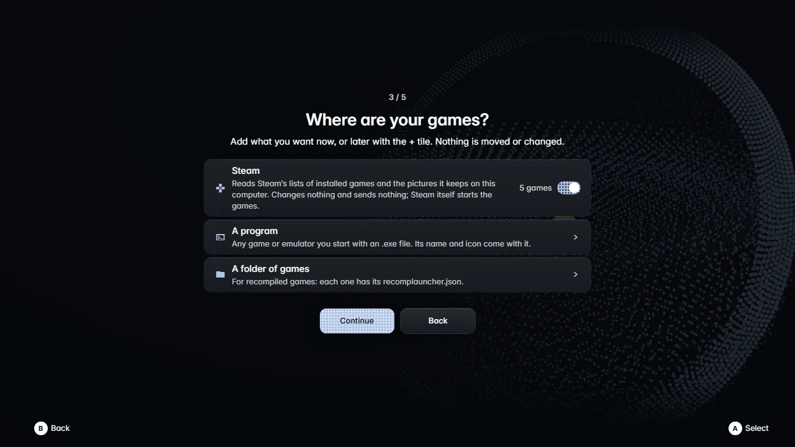
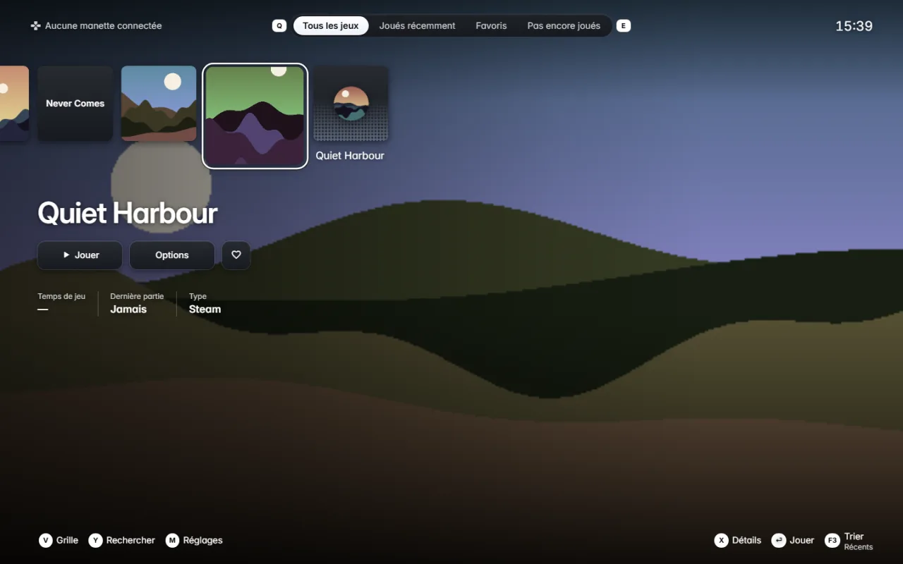
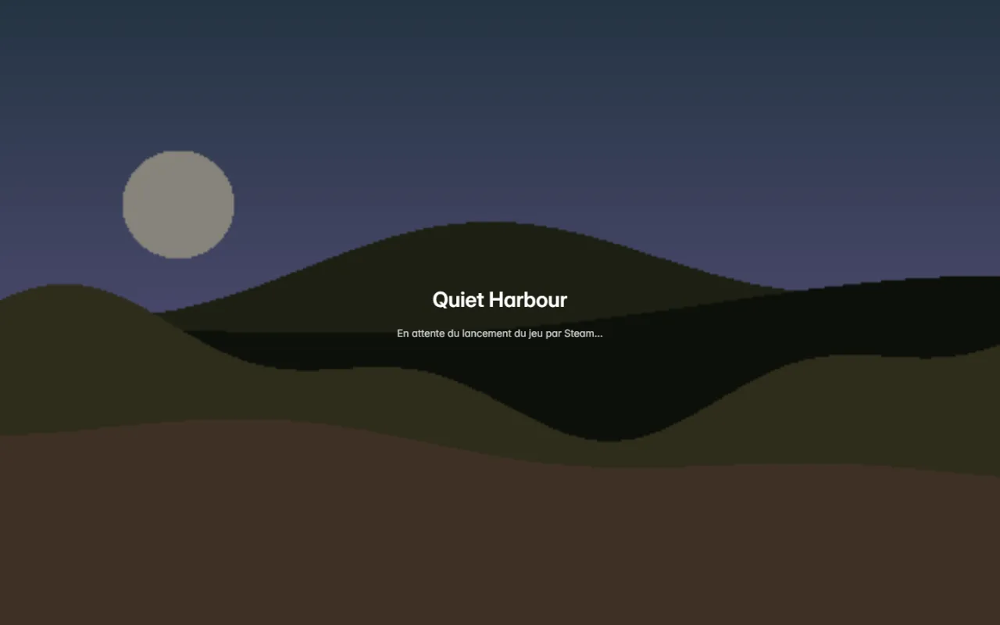
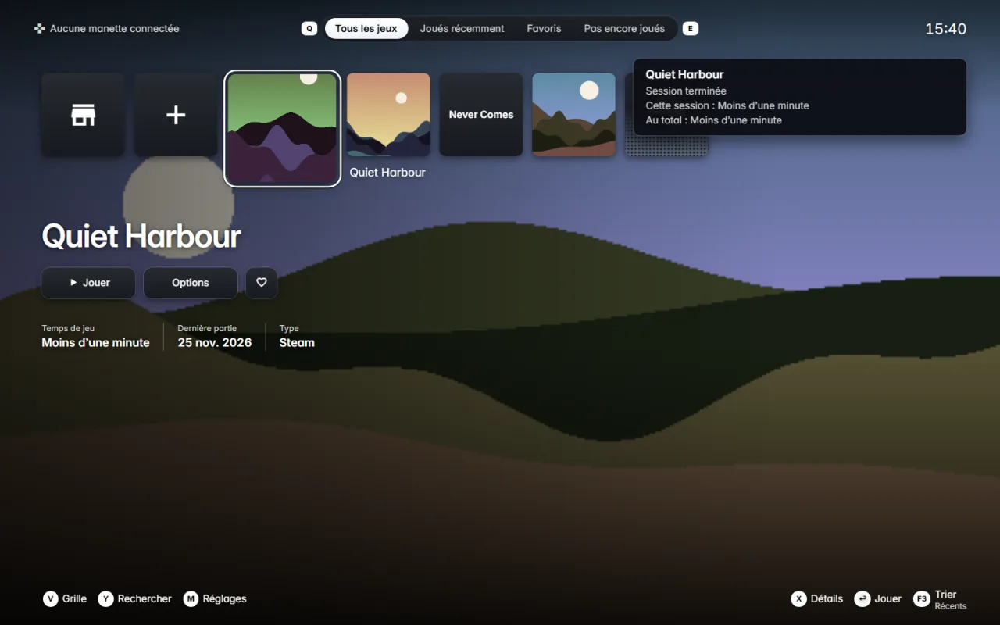

Add your Steam games
This guide describes 0.1.0-alpha.2. 0.1.0-alpha.3 is out since. What changes
- 1
Turn Steam on
In the guided setup, the + tile or Settings › Integrations › Steam. Oort reads the installed games, on every drive, and writes nothing in Steam.
Checked with invented games : Where this comes from

- 2
Find them
Their pictures are the ones Steam already keeps on your computer. Tools and soundtracks are left out; a game must be fully downloaded.
Checked with invented games : Where this comes from

- 3
Play
Play asks Steam for the game, and Steam starts it. If it updates it first, Oort waits; Cancel stops waiting.
Checked with invented games : Where this comes from

- 4
Come back
Quit the game: Oort comes back and counts the time. Checked with an invented Steam, never with the real one.
Checked with invented games : Where this comes from



What has been tried
Tried on a fresh GitHub machine, with invented games, an invented Steam and invented services. A player started a game on their PC with alpha.1, not yet with this one.